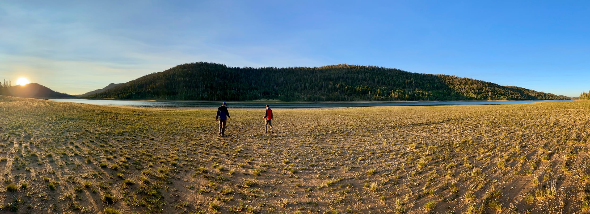

About Us
Bio
Hi, I'm David! I'm a former outdoor professional with experience in guiding whitewater kayaking and rafting, as well as hiking tours. It's hard to have a bad time outside, but the right gear can make a bad experience good and a good one truly spectacular. On this website you can find outdoor gear reviews that will help you choose the right equipment to create the best experience imaginable.
Happy Exploring!
Contact Information
(111) 222-3333
email@precipiceponderings.com